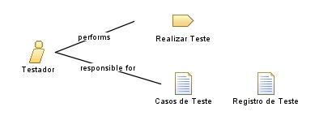

| Role: Testador |
 |
|
Relationships
 |
||
| Primary Performs | ||
|---|---|---|
| Additionally Performs | ||
| Modifies |
|
|
Main Description
Este papel é responsável principalmente pelas seguintes tarefas:
Os testes devem ser realizados não só no produto final, mas também a cada nova iteração, quando uma nova funcionalidade é liberada. |